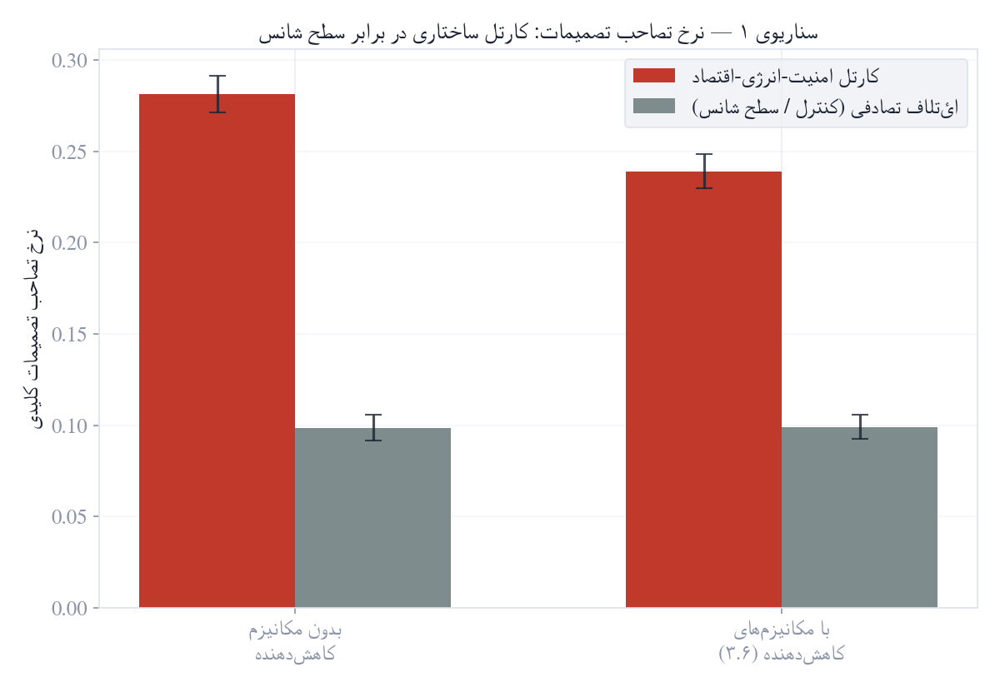
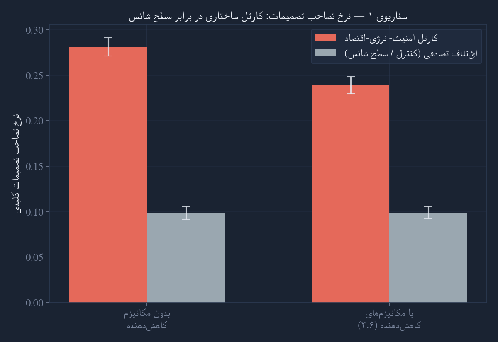
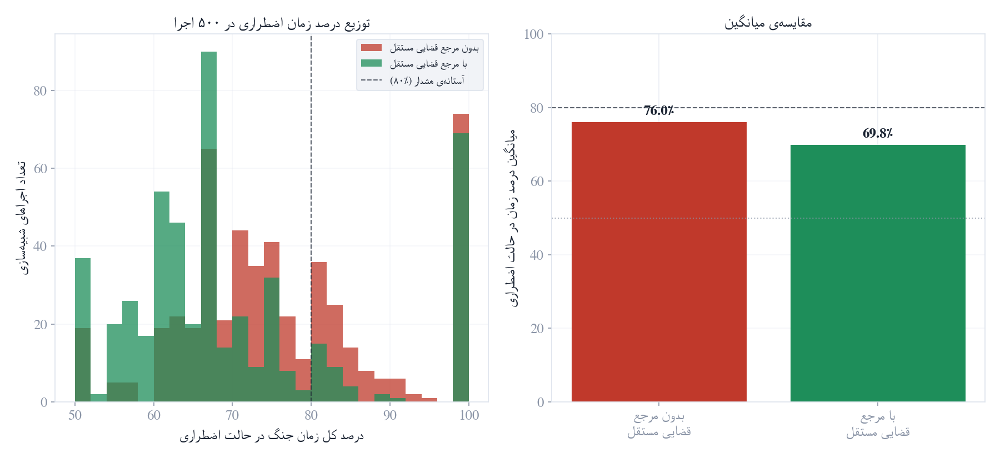
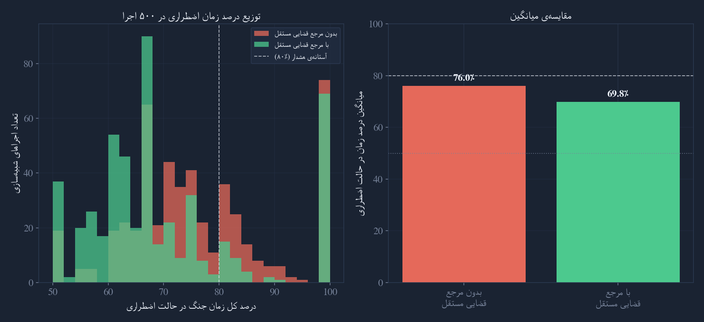
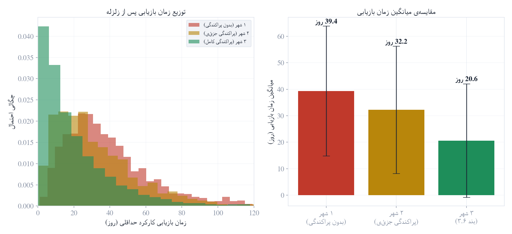
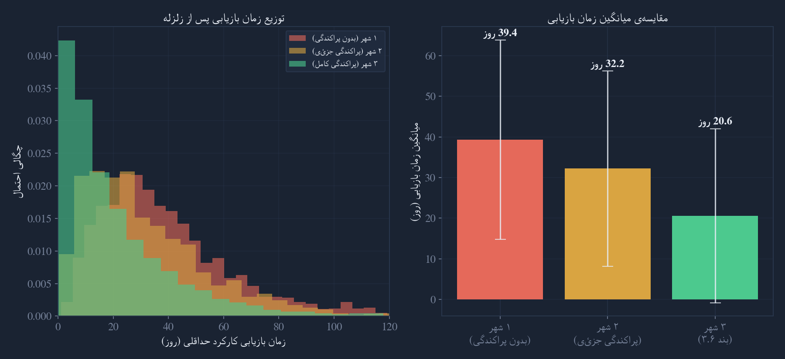

دوازده گیت مستقل، یک هماهنگکنندهی چرخشی بدون قدرت اضافه (Mirror-13)، و یک لایهی اعتبارسنجی شایستگی (Gate Zero) — طراحی و آزمودهشده با این انضباط: هر ادعا یا با شواهد تأیید میشود، یا صریحاً بهعنوان سؤال باز ثبت میماند.
این سند از انضباط ممیزی VARZIN پیروی میکند اما پروژهای کاملاً جداست — فقط روش ممیزی مشترک است؛ هیچ ادعای علمی یا زبانشناختی آن پروژه به اینجا منتقل نمیشود. این یک پروژهی طراحی سیستم حکمرانی است، بدون موضعگیری دربارهی هیچ کشور یا نظام سیاسی مشخص.
دوازده حوزهی کارکردی مستقل: اقتصاد، علم، امنیت، فرهنگ، انرژی، آموزش، دادگستری، سلامت، محیطزیست، زیرساخت، روابط خارجی، رفاه اجتماعی (قابل تعدیل). هر گیت واحد تصمیمگیری با مسئولیت مستقل و قابلردیابی است — نه مسئولیت جمعی مبهم.
هماهنگی بینگیتی — نه حکمرانی، نه تصمیمگیری نهایی. معیار طراحی: حذفش نباید سیستم را متوقف کند.
سؤال باز: چه کسی اعضایش را تعیین میکند و چطور از تبدیلشدن به مرکز غیررسمی قدرت جلوگیری میشود؟
لایهی اعتبارسنجی شایستگی (تخصص، سابقه، سلامت مالی، عدم تعارض منافع، پاسخگویی) پیش از ورود افراد به هر گیت. حکومت نمیکند — فقط دروازهبانی میکند.
مسئلهی بازگشتی «ناظر بر ناظر» همچنان باز است (بند ۳.۱).
تنها کاربرد ریاضی وامگرفته از پروژهی VARZIN — یک مسئلهی ترکیبیاتی محدود، نه ادعای علمی. در هر دورهی t دو نقش موازی تعریف میشود: گیت هماهنگکننده و گیت ناظر (با فاصلهی نیمدوره).
| دوره (t) | گیت هماهنگکننده (P_t) | گیت ناظر (A_t) |
|---|
دو عنصر اصلی این مدل نمونهی واقعی و کارکردی در دنیای امروز دارند — همراه با هزینهها و محدودیتهای مستندشان.
۷ عضو با انتخاب ۴ساله توسط پارلمان (نه انتخاب مستقیم مردمی). ریاست فقط تشریفاتی و چرخشی («اول در میان برابرها»)، بدون اختیار اضافه، بدون رأی عدم اعتماد در طول دوره. مکانیزم پایداری اصلی: «همکاریگرایی» اجباری — اعضا حتی مخالفت شخصی را علناً بیان نمیکنند.
⚠ هزینه: شفافیت اختلافنظر داخلی پایین میآید. آیا گیتهای این مدل هم باید «متحد ظاهر شوند» یا اختلاف داخلی علنی مجاز است؟ (به بند ۳.۳ رجوع شود)
از آتن باستان تا مجامع امروزی ایرلند (مواد مخدر)، هلند (سیاست اقلیمی)، آلمان (تغذیه) و اتحادیهی اروپا. سازوکار: انتخاب تصادفیِ طبقهبندیشده از میان داوطلبانی که به دعوتنامه پاسخ دادهاند.
⚠ محدودیت تجربی: استخر داوطلبان خودش از نظر جمعیتشناختی/ایدئولوژیک منحرف است — نسخهی کوچکترِ همان مسئلهی بازگشتی «چه کسی Gate Zero را کنترل میکند». حمایت اولیه ممکن است بازتاب نارضایتی از نخبگان باشد، نه اعتقاد پایدار به خودِ مدل.
هیچکدام از این چهار مورد «حلشده» اعلام نمیشود؛ هرکدام با وضعیت دقیق و ریسک باقیماندهاش ثبت شده است.
| # | حوزهی چالش | وضعیت | ماهیت ریسک باقیمانده |
|---|---|---|---|
| ۱ | کنترل Gate Zero (مسئلهی بازگشتی ناظر) | جزئی | کاهش تمرکز از طریق قرعهکشی؛ اما منبع انتروپی و لایهی مدیریت کد همچنان آسیبپذیرند (حلقهی بازخورد قابلدستکاری، مشابه RANDAO) |
| ۲ | سرعت واکنش در بحرانها | جزئی | فیوز زمانی یک استعاره است؛ پایداری نهایی به ارادهی انسانها بستگی دارد، نه سختافزار — ریسک تمدیدهای پیاپی تاریخاً مستند است |
| ۳ | پاسخگویی توزیعشده | بهبود واقعی | سجل شفاف آرا مشکل لوثشدن مسئولیت را حل میکند، اما دو ریسک ثانویه دارد: اثر خاموشکننده بر مخالفت واقعی، و تبدیلشدن به ابزار برچسبزنی و دوقطبیسازی |
| ۴ | مشروعیت روانی | کاملاً باز | فاقد هرگونه دادهی تجربی یا فرمولهسازی معتبر |
حاکمیت پدیدهای بیناذهنی (inter-subjective) است. چهار گسل روانی-اجتماعی زیر مشخصاً برای پیادهسازی این مدل بررسی شد — هرکدام هنوز کاملاً باز.
حافظهی تاریخی معمولاً حاکمیت را با یک اراده/چهرهی واحد در رأس صورتبندی کرده است. انتزاعیشدن قدرت در پروتکلهای چرخشی ممکن است در بحران بهجای «توزیع سالم قدرت»، به «بیصاحببودن سیستم» تعبیر شود و حس امنیت روانی را مخدوش کند.
تمایل به شناخت چهرههای شاخص و بیاعتمادی به بوروکراسی گمنام میتواند مقاومت در برابر سپردن مقدرات به افراد قرعهکشیشده ایجاد کند. ریسک جانبی: واگذاری عملی تصمیم به کارشناسان پشتپرده — الیگارشی تکنوکراتیک پنهان.
مدلهای موفق توزیعشده (سوئیس) بر توافق نخبگان پشت درهای بسته تکیه دارند. در فضای بهشدت دوقطبی، سازش کارشناسی ممکن است «خیانت» تلقی شود، و سجل عمومی آرا (بند ۳.۳) بهجای بهبود پاسخگویی، سوخت دوقطبیسازی در شبکههای اجتماعی شود.
قرعهکشی ملی بدون سهمیهبندی میتواند مناطق مرزی/اتنیکی را مکرراً بینماینده بگذارد و به «تداوم مرکزگرایی» تعبیر شود؛ سهمیهبندی هم تنشهای هویتی را به درون گیتها میکشد. ادبیات حاکمیت چندکانونی (اوستروم) و مصالحهگرایی (consociationalism) این تعادل را با دههها تجربه بررسی کردهاند.
اصلاح مفهومی مهم: چرخش P_t/A_t فقط نقش تشریفاتی را میچرخاند — قدرت واقعی هر گیت (منابع، اختیار اجرایی) را تغییر نمیدهد. چرخش هماهنگی نباید با توزیع قدرت اشتباه گرفته شود. این بخش با قصد بستن بحث نوشته نشده — با قصد ثبت صادقانهی اینکه هر سه بنبست به چیزی بیرون از خودِ سیستم نیاز دارند.
هیچ فرمول ترکیبیاتی ائتلاف مادی بین گیتهای با منافع مکمل را حل نمیکند.
اذعان نهایی: اگر نهادهای قدرتمند واقعاً بخواهند، هیچ ساختار کاغذی بهتنهایی مانعشان نمیشود. تنها چیز مؤثر تاریخاً: جامعهی مدنی مستقل با پایگاه اجتماعی خودش.
یک بنبست منطقی است، نه یک سؤال باز که با نسخهی بعدی حل شود. هیچ سیستم بستهی الگوریتمی مشروعیت لایهی اولش را از خودش تولید نمیکند.
اذعان نهایی: این باطلکنندهی ادعای «سیستم پایدار و خودبستهی ریاضیاتی» است. سیستم میتواند بعد از مشروعیتبخشی بیرونی خودپایدار بماند، اما نمیتواند آن نقطه را خودش بسازد.
فیوز زمانی فقط سرعت نهادینهشدن را کم میکند، مانع آن نمیشود.
اذعان نهایی: هیچ دکترین جانشینی از داخل معماری بیرون نمیآید؛ تاریخ نشان میدهد وضعیت اضطراری موقت اغلب دائمی میشود.
هر شبیهسازی یک سؤال و معیار شکست پیشثبتشده دارد. پارامترها فرضهای مدلسازی برای آزمون جهت اثرند — نه دادهی تجربی مستند و نه پیشبینی دقیق رفتار سیاسی واقعی. چهار خطای طراحی در حین ساخت مدلها شناسایی و پیش از انتشار اصلاح شدند (مستند در پیوست فنی مخزن).
آیا سه گیت با منافع مکمل میتوانند حتی با مکانیزمهای بند ۳.۶ تصمیمات کلیدی را تصاحب کنند؟ (۳۰۰ اجرا × ۲۰۰۰ دوره)
نتیجه: کاهش فقط ٪۱۵؛ کارتل همچنان تقریباً ۲.۴ برابر بیشتر از ائتلاف تصادفی موفق میشود — اذعان «کاهشدهنده، نه مانع» با عدد تأیید شد.


در جنگ طولانیمدت (~۲.۳ سال)، آیا فیوز ۱۴روزه + مرجع قضایی مستقل مانع «وضعیت استثنایی دائمی با ظاهر قانونی» میشود؟ (۵۰۰ اجرا × تا ۶۰ چرخه)
نتیجه: حتی با خوشبینانهترین فرض برای مرجع قضایی، سیستم بهطور میانگین ~٪۷۰ از زمان جنگ در حالت اضطراری میماند. هیچ راهحل مؤثری یافت نشد.


اگر زیرساخت حیاتی (دبیرخانهی Mirror-13، سجل عمومی، منبع انتروپی Gate Zero) در ۱، ۲ یا ۳ شهر پراکنده باشد، زمان بازیابی چقدر تغییر میکند؟ (۲۰۰۰ اجرا)
نتیجه: پراکندگی کامل زمان بازیابی را تقریباً نصف میکند — تنها سناریویی که مکانیزم پیشنهادی بدون قید مؤثر است، چون مسئله ماهیتاً مهندسی/فیزیکی است، نه سیاسی/بازگشتی.


| سناریو | مکانیزم پیشنهادی | اثر اندازهگیریشده | نتیجه |
|---|---|---|---|
| ۱ · ائتلاف مادی | تفکیک بودجه + ممنوعیت پرسنلی | کاهش فقط ٪۱۵؛ همچنان ×۲.۴ سطح شانس | کاهشدهنده، نه مانع |
| ۲ · نهادینهشدن اضطرار | فیوز + مرجع قضایی مستقل | کاهش فقط ٪۸؛ ~٪۷۰ زمان جنگ در اضطرار | نگرانی جدی تأیید شد |
| ۳ · فروپاشی همزمان | پراکندگی جغرافیایی ۳شهره | ٪۴۸ کاهش زمان بازیابی | راهحل مؤثر |
پنج شکاف که در دورهای بعدی ممیزی — با پرسش مستقیم «چه چیزی را جا انداختیم؟» — شناسایی شدند.
طراحی نهادی، حتی وقتی از نظر نظری بینقص باشد، فقط بخش کوچکی از یک گذار سیاسی واقعی است. بزرگترین شکستهای تاریخی معمولاً از طراحی نهادی ضعیف نمیآیند، بلکه از فقدان یک فرآیند مشروع و مشارکتی برای رسیدن به توافق — چیزی که هیچ سند طراحی، هرقدر دقیق، جایگزینش نمیشود.
چند محدودیت بنیادین (بازگشت مشروعیت Gate Zero، تصاحب تدریجی خارجی، مشروعیت روانی) راهحل شناختهشدهای در ادبیات علوم سیاسی موجود ندارند — نه فقط در این سند. اینها همیشه بهعنوان محدودیت باز ثبت میمانند، نه اینکه با نسخهی بعدی «حلشده» اعلام شوند.
ارزش واقعی این کار، در صورت تکمیل، ورودی به بحث عمومی و پژوهش است — نه جایگزین فرآیند مشارکتی تدوین یک نظام حکمرانی.
هر مفهوم، سازوکار، یا ادعای جدید که به این سند وارد میشود، باید از چهار فیلتر بگذرد — این یک قاعدهی ثابت و رسمی برای کل پروژه است، نه فقط یک بخش خاص.
آیا این جزء واقعاً طراحی/اجرا شده، یا فقط یک ایده است؟
آیا میتوان دقیقاً گفت بر چه دادهای، با چه روش، و با چه خطایی تعریف میشود؟ اگر نه، وارد هیچ فرمول یا آستانهی عددی نمیشود.
آیا میتوان آن را شبیهسازی یا آزمایش کرد؟
هر جزء دقیقاً یکی از سه برچسب را دارد: پیادهسازیشده فرضیه چشمانداز آینده
| مؤلفه | وضعیت | شواهد | آزمون انجامشده |
|---|---|---|---|
| ۱۲ گیت (معماری) | پیادهسازی مفهومی | سند معماری، پیادهسازی وب | — (هرگز بهعنوان حکومت واقعی اجرا نشده) |
| فرمول چرخش Z₁₂ | پیادهسازیشده | اثبات ریاضی، کد اجرایی در همین صفحه | تأیید کامل، بدون خطای عددی |
| Gate Zero | فرضیه | تحلیل منطقی (بند ۳.۱) | بنبست منطقی اثباتشده، راهحل ندارد |
| شبیهسازی سناریو ۱-۳ | پیادهسازیشده | کد پایتون قابلبازتولید، نتایج JSON | اجرا شد؛ ۴ خطای طراحی یافته و اصلاح شد |
| راهکارهای مادی بند ۳.۶ | چشمانداز | تحلیل نظری | اجرا نشده |
| پروتکل روز صفر (بخش ۱۰) | چشمانداز | درسهای تطبیقی گذارهای واقعی | شبیهسازی یا آزمون مستقیم نشده |
| شبیهساز عاملمحور واقعی (Mesa) | چشمانداز | — | هنوز آغاز نشده |
مقایسهی مدل ۱۲گیتی با چهار جریان کلان اپوزیسیون ایران — سلطنتطلب/مشروطهخواه، جمهوریخواه دموکرات/لائیک، چپ/سوسیالیست، و فدرالیست/قومی-سیاسی. بدون قضاوت اینکه کدام «درستتر» است؛ فقط تحلیل ساختاری اینکه مدل کجا همراستاست و کجا واقعاً در تنش.
رضاشاه (۱۳۰۴-۱۳۲۰) با قدرت نظامی تمرکز اجباری را بر ساختار سنتاً غیرمتمرکز ایران تحمیل کرد — خلعسلاح ایلات، ممنوعیت زبانهای محلی در آموزش. در ۱۳۲۴-۱۳۲۵، «فرقهی دموکرات آذربایجان» و «جمهوری کردستان مهاباد» با پشتیبانی شوروی شکل گرفتند و در عرض چند هفته پس از خروج شوروی توسط ارتش ایران سرکوب شدند (اعدام قاضی محمد). این حافظهی تاریخی هنوز زنده است — دقیقاً همان دوگانهی تفسیری (خطر تجزیه در برابر حق تعیین سرنوشت) امروز هم در واکنش رضا پهلوی به ائتلاف کردی («تجزیهطلبی») تکرار میشود.
| گروه | برآورد محافظهکارانه | منطقهی اصلی | اکثریت مذهبی |
|---|---|---|---|
| فارس | ~۵۰–۶۱٪ | سراسری، بهویژه مرکز | شیعه |
| آذری (ترک) | ~۱۶٪ (برخی منابع تا ۲۰-۳۰+ میلیون) | آذربایجان، تهران | عمدتاً شیعه |
| کرد | ~۸–۱۰٪ | کردستان، کرمانشاه | آمیخته سنی/شیعه |
| لر | ~۲–۶٪ | لرستان، خوزستان | شیعه |
| عرب | ~۲٪ | خوزستان (اهواز) | آمیخته شیعه/سنی |
| بلوچ | ~۲٪ | سیستان و بلوچستان | عمدتاً سنی |
| ترکمن | ~۲٪ | گلستان، خراسان شمالی | عمدتاً سنی |
حول رضا پهلوی؛ اجلاس مونیخ (بهمن ۱۴۰۳) او را رهبر «دولت انتقالی» تا انتخابات برگزید. خودش میگوید ترجیحش «جمهوری» است و شکل نهایی با رفراندوم تعیین شود.
⚠ تنش: «سیستم انتقالی» او همان مسئلهی بازگشتی Gate Zero را بازتولید میکند — یک هستهی کوچک بدون نمایندهی کرد/بلوچ/عرب تصمیم میگیرد گذار چگونه باشد. او ائتلاف کردی را علناً «تجزیهطلب» خوانده.
میراث جبههی ملی مصدق (۱۳۲۸). ائتلاف «همبستگی برای جمهوری دموکراتیک سکولار» (اسفند ۱۴۰۱) از ۵ گروه جمهوریخواه و چپ تشکیل شده — نشان میدهد این دو خانواده در عمل بههم تنیدهترند تا در نظریه.
⚠ تنش: Sortition در برابر سنت انتخابات حزبی. نکته: مجاهدین خلق/شورای ملی مقاومت خودش را جمهوریخواه میداند اما بهدلیل سابقهی همکاری با صدام و اتهامات فرقهگرایی، از این ائتلاف جداست.
حزب توده (۱۳۲۰)، قدیمیترین حزب سازمانیافتهی ایران. در دی ۱۴۰۴ بیانیهای هم علیه «دیکتاتوری خامنهای» و هم علیه «مداخلهی نظامی آمریکا و بازگشت سلطنت» صادر کرد.
⚠ خلأ در مدل: مدل ۱۲گیتی هیچ موضعی دربارهی نقش قدرتهای خارجی در گذار ندارد — دقیقاً همان چیزی که موضع توده روی آن انگشت میگذارد و امروز مرکز بحران است.
در ۳ اسفند ۱۴۰۴، پنج حزب کردی (پیدیکیآی، پاک، پژاک، خبات، کوملهی زحمتکشان) پس از ۸ ماه مذاکره «ائتلاف نیروهای سیاسی کردستان ایران» را با فرماندهی نظامی مشترک اعلام کردند. اتحادی مشابه بلوچ هم شکل گرفته.
⚠ تنش جدیترین: این دیگر گفتمان نیست — یک ساختار مسلح با کنترل عملیاتی مناطق مرزی است. هیچکجای مدل ۱۲گیتی مشخص نمیکند در روز صفر گذار، این کنترل چگونه با «گیت امنیت» مرکزی ادغام میشود.
نیست: یک برنامهی سیاسی — نمیگوید حکومت بعدی جمهوری باشد یا مشروطه، چه کسی رهبری کند. هست: پاسخ به این سؤال — هر توافقی که نیروهای سیاسی ایران به آن برسند، چه سازوکارهایی لازم دارد تا در لحظهی گذار به جنگ داخلی یا دیکتاتوری جدید تبدیل نشود؟
«میز اصول مشترک» — فقط اصول، نه جزئیات؛ امضای متقاطع، نه ادغام تشکیلاتی. هستهی عملیاتی: «لایهی اعتماد» با ۴ کارکرد (راستیآزمایی مستقل اطلاعات، ثبت عمومی تعهدات، شفافیت مذاکرات، سجل دیجیتال توافقها).
⚠ خودش مسئلهی بازگشتی دارد: چه کسی این نهاد راستیآزمایی را اداره میکند؟
ساختار اداری موجود منحل نمیشود — زیر نظارت چندجانبه قرار میگیرد (نه سناریوی «بعثزدایی»). نمایندگی مستقیم اقوام، نه فقط از طریق احزاب مرکزنشین.
گذاری که در ماه دوم گرسنگی بیاورد، در ماه سوم دیکتاتور میسازد. تداوم بانک مرکزی و پرداخت حقوق بدون وقفه، همزمان با فاز یک — نه بعد از آن.
آتشبس نظارتشده بدون پیششرط خلعسلاح؛ بهرسمیتشناختن موقت کنترل میدانی واقعی؛ ادغام تدریجی فردی. سپاه بهعنوان بازیگر مستقل با سه مسیر محتمل: تجزیهی درونی، معاملهی امنیتی، یا تقابل مستقیم.
⚠ این پروتکل هیچ استراتژی برای انتخاب میان این سه مسیر ندارد — انتخاب دست سپاه است.
مجلس مؤسسان با نمایندگی تضمینشدهی جغرافیایی؛ سؤال «جمهوری/مشروطه/فدرال» فقط اینجا، با رأی مردم، پاسخ میگیرد — مدل ۱۲گیتی هم فقط یکی از گزینههای روی این میز است.
سقف زمانی سخت که تمدیدش دست خودِ شورای انتقالی نیست — فقط با رفراندوم مستقیم. پاسخ به یافتهی عددی شبیهسازی ۲ (٪۷۰ زمان جنگ در حالت اضطراری حتی با مرجع قضایی مستقل).
سه بازیگر — آمریکا، اسرائیل، و ایران — با دقیقاً یک استاندارد بررسی شدهاند. برای هر رقم، دنبال جایی گشتهایم که چند روششناسی مستقل به بازهی مشابهی رسیده باشد. این بخش حکم نمیدهد کدام کشور «واقعاً اشتباه کرده» است — فقط واقعیتهای مستند و سرنوشت کشورهای هدف را کنار هم میگذارد.
| مداخله | بازیگر | تلفات (بازهی برآوردها) | سرنوشت کشور هدف |
|---|---|---|---|
| عراق ۲۰۰۳ | آمریکا | ۲۰۰هزار تا ۶۵۵هزار | فروپاشی دولت، ظهور داعش، ۷+ میلیون آواره |
| افغانستان ۲۰۰۱-۲۰۲۱ | آمریکا | ۱۷۶هزار تا ۲۱۲هزار | بازگشت طالبان در ۱۱ روز پس از خروج |
| غزه ۲۰۲۳– | اسرائیل | ۷۲هزار+ (ادامهدار) | ویرانی گستردهی زیرساخت مسکونی |
| سوریه (حمایت اسد) | ایران | ۳۵۰هزار تا ۶۵۶هزار (کل جنگ) | سقوط نهایی اسد؛ بزرگترین سرمایهگذاری منطقهای ایران از دست رفت |
| یمن (حمایت حوثی) | ایران | ۹۲هزار تا ۳۷۷هزار | تجزیهی عملی کشور، بزرگترین بحران بشردوستانهی جهان |